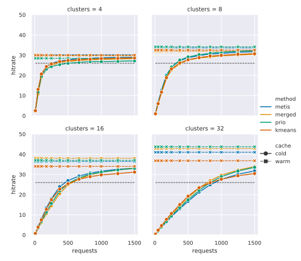
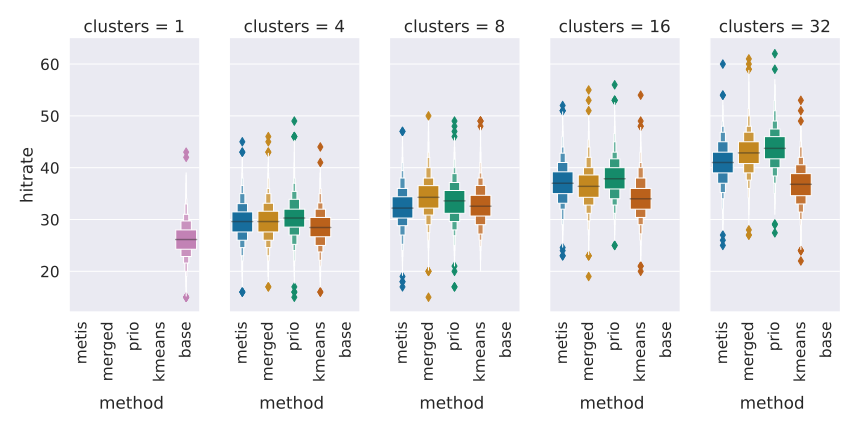

Introduction
The Open Definition defines open data as data that can be: “… freely used, modified, and shared by anyone for any purpose”. This may seem utopian, but these principles are being adopted all over the world. The OECD has documented the positive impact of Open Government Data [1], and similar ideas have surfaced in academics with the FAIR Data Principles [2] where a common guideline is to make data “As open as possible as possible, as closed as necessary” [3]. Many public transit operators also make their timetables available as open data. This is often done using de facto standards such as GTFS or using official standards such as NeTEx.
Both of these data standards result in large data dumps. The combined GTFS feed of the public transit companies that operate in the Brussels area (SNCB, STIB, De Lijn, and Tec) is already over 1 GB of uncompressed data. For a hobbyist developer that wants use a Raspberry Pi to show a dashboard of bus passages near them, ingesting and processing the entire GTFS data dump may not be feasible. Luckily, most public transit operators also have real-time APIs, so they can just periodically poll data from a few stops instead. Now consider the case of someone who is looking to buy a house, and the quality of service of wheelchair accessible public transit is important to them. Real-time data is no longer sufficient; the weekend offering may be entirely different, or the wheelchair accessible buses only run during off-peak hours. They can fall back to the data dumps, but they will have to ingest much more data than necessary.
Another use case for open transit data is route planning. The ideal route is subjective; a reasonable walking distance will differ from person to person, and will even depend on a person’s mood. Contemporary route planning services preprocess data to provide better query time performance [4, 5, 6], but this preprocessing also restricts the types of queries that can be answered. For example, an algorithm that reuses precomputed shortest paths between stops will not be able to give you the most scenic path – unless those are precomputed as well. But what if someone could use their own device to calculate their own personalized routes instead of using a service? They could tweak journeys until they find exactly what they are looking for, without putting an unreasonable strain on a route planning service. This approach obviously comes with its own challenges, and ingesting data is again one of them. Downloading the entire dataset to plan a route from one adjacent city to another will make the process too slow to be useful.
These examples show that the way data is published can restrict the ways it is used. And since the goal of open data is to let people use the data how they wish, the ideal data publishing scheme should not impose such restrictions.
Method
separation of concerns
data publishers are not necessarily data owners
- data publisher may be hired by the data owner to publically disclose the data
- data publisher might republish data as a third party to meet specific requirements
- some applications do not require fragmentations at all
- some applications might benefit from specific fragmentations (for example, by trip instead of by stop)
regardless of the data publisher’s role – their service has to be maintainable to keep it cost-efficient
- the world is not static, it keeps evolving
- data published based on the real world has to evolve as well
- if the transit operator adds a stop, the published connections should accommodate this with as little friction as possible
existing work has focused on distributing stops, or trips, into discrete sets
- problem with this approach is that the clustering has to be updated to include new stops, or risk going out of sync with the source data
- we propose to partition the physical space with Voronoi
- the resulting partitions are published separately as their own resource, described as WKT literals
- connections server can ingest any partition description, fragment the source data accordingly, and generate a hydra:PartialCollectionView per partition, the tree ontology is used to describe which partial view corresponds to which geospatial partition
clustering
- kmeans with voronoi
- simple chunks of equal size
- prio
- simple chunks of varying size
- merged
- irregular shapes of varying size
- metis
- irregular shapes of equal size
Evaluation
Server and client are two machines on the same local network, with a default 20 ms added per request
No caching to isolate the impact of the clustering methods, cacheability of files is simulated separately
results
Table of all the results, raw values
Impact of clustering method
medians are comparable, with a complex method such as metis performing worse than simple kmeans
prio has more consistent results, lower 75 perc percentile
Impact of number of clusters
Less is better
Cacheability
no considerable change in total data size, so a cache that is big enough to cache the original data can also cache the partitioned data
One thing that does change is how fast the cache will fill up - you need at least one request per fragment to fill up a web cache.
The different partitioning schemes will also diverge when the cache is too small to contain all the data. Filling a cache with fine-grained data will take longer, but the cached data is more likely to be relevant. For example, a purely temporal fragmentation strategy will contain data for the entire operator’s service area, even if one region is significantly less often requested.
To evaluate how fast a cache is filled we replay a small amount of requests on an empty cache, and do this many times. To evaluate how often relevant data is evicted from the cache we do the same, but on an already warmed up cache.

